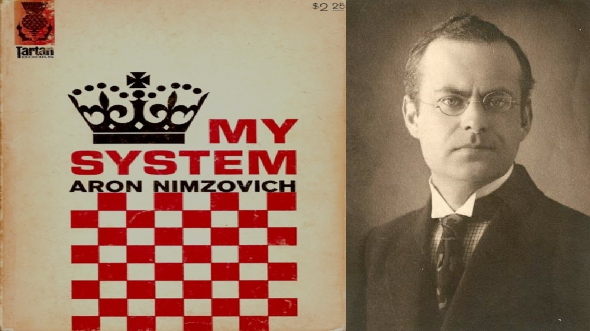
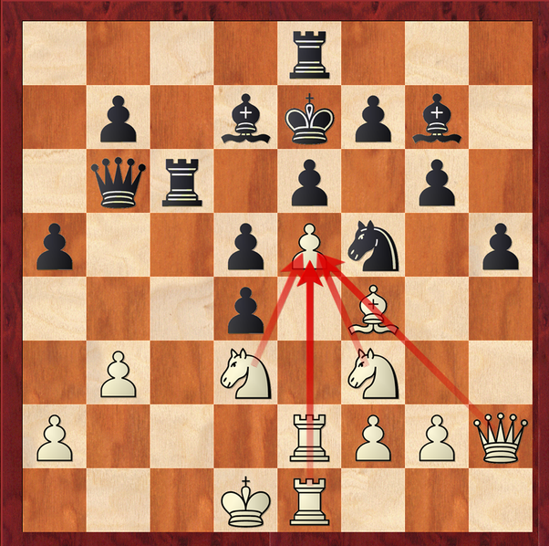
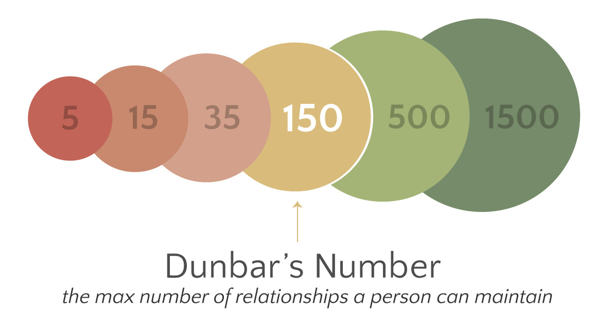
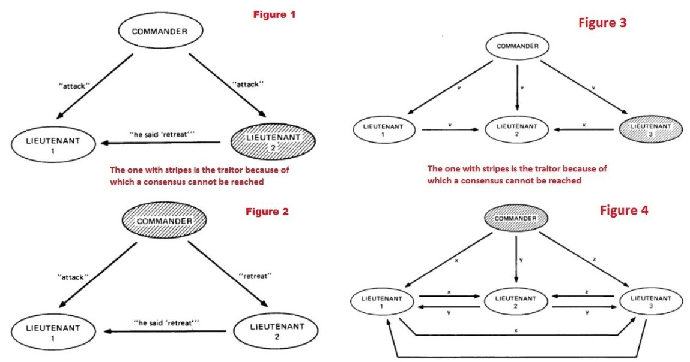

Proof of Work, a pictorial essay
In the modern nation state, courts ("justice") operate with the threat of violence. The exact way a dispute is settled varies (jury, single judge, etc.), but the "finality" of the resolution they provide is based on the fact that the state asserts the final say, and if you don't agree, it doesn't matter, because they have men with guns. Importantly, they don't just have some men with guns (that's something you might have, too), they have an overwhelming number of men and increasingly large guns depending on how much you don't want to accept their say.
If you are thinking "that's a stupidly over-simplified way of thinking about modern justice systems", then that's fine; a lot of what follows is precisely about the finesse around this simplified view of the world.
The threat is stronger than its execution
This aphorism comes from the world of chess (as far as I gather); it's somehow both obvious but also subtle at the same time. Forgive the sidetrack, but it reminds me of the possible originator of this phrase, a controversial figure in the history of chess - Aron Nimzowitsch. One (apocryphal?) story of him features him pointing at his grandmaster opponent and loudly proclaiming "Why must I lose to this idiot?!". But to the matter in hand - Nimzowitsch wrote one of the most famous early-ish treatises on chess strategy called "My System".

in this book he popularised (amongst many other less controversial things) the idea of overprotection - so for example, you have a pawn on square e5, and he considered it good strategy to protect it with a knight on f3, a rook on e1 and a bishop on g3 etc. etc. Many players - indeed top grandmasters - today find this idea faintly ridiculous. What interests me is that when they deride the idea they essentially never give credence to the element of truth it surely contains, which is this: if N > 1 pieces protect a key square, it means that any of them can move without losing protection of that square. In other words the potential for any piece to move is preserved (contrasted with a single protector, which is therefore bound and cannot move away from protection).

The idea behind the phrase "the threat is stronger than its execution" - which sounds paradoxical at first - is similar. Potentiality is more difficult for the adversary to handle than actuality, mostly because the adversary may have to handle many potential actions, rather than the one that is actualised.
This can manifest psychologically - inducing fear in an enemy is often a very excellent strategy, rather than directly attacking them. But it's important to understand that it's not just mind games. It's a matter of economy, and a matter of abstraction. Just like in the development of quantitative disciplines (all the way from early mathematics to modern computer programming, and much modern science), the development of abstractions allows for economy, which maximally leverages resources, and even open up whole new dimensions that were previously inaccessible.
The virtualization of violence
This line of thinking naturally leads us to how violence as a concrete actualization of will tends to get abstracted away. This is seen across nature, not only in human societies. It's well understood how access to mating in social animals (various types of mammals) is "arbitrated" through combat, and importantly, the combat is rarely to-the-death. Even more strikingly, the "combat" is reduced to competition over attributes which might allow for better success in combat. The obvious example is the stag's antlers:
That's a lot of physical raw material, requiring a lot of nutrition, and with unclear direct utility (very inefficient!). These are only a quasi-abstraction from real horns designed to kill - they can kill other stags, but apparently it's very rare, but they have evolved to be very visually assessable by other stags, and their complex geometry allows for battles ("horns locked") which are more of an assessment of the ability to kill, than an attempt to do so. There are of course many further examples that are more obviously abstractions. Further, displays may not be of attributes designed to inflict violence, but attributes that display high levels of general fitness, which itself is an abstraction from "ability to gather a lot of resources". The peacock being the most famous visually striking example, albeit the exact mechanisms involved may not be a matter of settled science.
i
I will leave the biologists to extend this list further with more obscure examples...
A rather interesting summary of one perspective on these phenomena is the handicap principle (which somehow I had not read before writing most of this document, and as you will understand from reading it, I now rather wish I had!).
Also, the two examples we've seen so far show how there are two sides to this phenomenon: show dominance by showing the ability to win a fight without fighting; show superior suitability by showing the ability to gather resources without actually gathering resources. They are clearly not completely distinct.
The same in modern human society
We can see both types of 'abstraction' very clearly even in modern society. The violence-competition is virtualized in sport, most obviously:
(It's probably not an accident that in many places, sportsmen are pretty much at the top of the mating hierarchy, at least to some females!). But lest we get too abstract, let's not forget that just generally, displays of violence capability are also a big part of human society, even at the nation-state level:
Once we start thinking about human behaviour this way, we can see it everywhere. Consider the engagement ring and ask yourself where this tradition might come from:
We are not so different from peacocks here ... and it's not of course "irrational" in any but the most inane sense. Look at the analogy between the peacock's display and the engagement ring more closely, both:
- are costly in resources to create
- are visually appealing
- are (visually) very distinct from the normal "stuff" in the environment
- are very immediately and easily recognized by any viewer, on their own
- signal that the creator is part of a group (genetic, or cultural)
Much less obvious I think is that the permanence of these displays is not central. Sometimes they are very delicate and fragile (think: flowers, think: sports displays with substantial risk of injury that would cause permanent inability to repeat them), and this is almost the point - to the receiver of the signal, what matters is that the signal was unambiguously difficult to create. What matters much less is the "substrate", i.e. what the signal is "made of". This is part of the insight in the "handicap principle":
what matters is what you couldn't do, because you did this.
Further, imagine yourself as a small bird in the jungle - to find mating partners in this extremely noisy environment, you are looking for a small signal - a patch of bright colour - in this high noise environment. You want the signal to be unambiguous - blue where everything is green, yellow, brown, red - and costly. You don't want to have to compare it to something else to check it's correct (is it the same color as something else on the other side of the jungle? sheesh!). You really don't care about semantics - you don't care what the signal "means", except specifically that it's in some sense pre-agreed (perhaps genetically? see the last bullet point); to an outsider the signal could be outlandish or ridiculous, and that doesn't matter.
The court, the bank, and the abstraction of money
You can see it in architecture; there is of course a very good reason why historically banks were built of extremely sturdy materials, at considerable cost. They were originally actually vaults for high concentrations of physical wealth, and had to protect well from direct frontal assault.
Nowadays this is another abstraction of the type already mentioned; if an organization put that much money into building such an imposing building or flashy skyscraper, they're hardly likely to steal my pathetic little stash! Court buildings likewise represent an abstraction of the state's power, and so do government offices (this is particularly obvious in more authoritarian states like China, where the government buildings in smaller towns look almost absurd (this example is very typical, in Luxian):
The whole "virtualization" paradigm, taking concrete physical force and replacing it with "threats, stronger than executions" has entirely entered the realm of money too. Not to dip my toe into the various debates about the origin of money, I'll just talk about recent history: we moved from bearer instruments and certificates for bearer instruments, through to certificates representing pure "fiat" in the literal sense - fiat meaning the will of the governing power, essentially. So "fiat is backed by men with guns", the famous Krugman quote,
... is certainly right in essence even if you quibble over various details. In the same way that courts are "backed by men with guns".
But I think it's important to step back and consider what role money takes in a society - its purpose is always exactly abstraction. It solves the "double coincidence of wants" problem by creating an entirely new class of good that no one originally wanted (this is the counter intuitive about much mathematics - to solve a problem involving 2 or 3 things you add another thing, superficially making everything more complicated, but suddenly everything 'falls into place', creating a new structure with more symmetry. For example, if the general solution of polynomials is tortuous and even insoluble (see: Galois) for real numbers, by adding an apparent complexity: a new made-up solution to x^2=-1, you suddenly find that everything cleans itself up (see: the fundamental theorem of algebra). Money does something similar, because we replace an O(N^2) pricing problem with an O(N) problem - i.e. you don't have to price everything against everything, you can price everything against money. To be clear that is not the whole story, as not any good serves the role of money well, so money itself is not a pure abstraction, it's just that its purpose is abstraction.). Its role being abstraction, it is about reducing the cognitive load of needing to form relations amongst things, from something unworkable to something reasonable. To give a .. non-abstract ... example: in days before anything like money, to trade bread for shoes, I (the baker) needed to know Fred the shoemaker and establish a long term semi-trust relationship with him (this was of course mediated via a tribe - woops, that's an abstraction!). So, even if there is obviously social stuff around it, money itself is intrinsically not social - it is precisely because of the limitations of social group formation that we even need money at all. To the Bitcoiners out there, a reminder "all the trust required to make it work" - that's a phrase you should have ingested.
The above paragraph is something that somehow many Bitcoiners and other cryptocurrency advocates very often seem to have failed to internalise, and it's crucial. For example, "it's fundamentally a social phenomenon", "it's money controlled by the people" and many similar phrases I hear again and again, are categorically wrong. You have it exactly opposite to the way it actually is. Money is intrinsically not social, I repeat - even though it of course exists in a social context, its purpose is to counteract the limitations of that.
Reification and information
The verb "to reify" is pretty obscure, but one which I think is very apposite, and under-used in this context. To save you a look up:
transitive verb To regard or treat (an abstraction) as if it had concrete or material existence. To make into a thing; make real or material; consider as a thing.
I think it's often used almost pejoratively (i.e. you treat something as real when it really isn't), but I'm preferring the second, positive version of the meaning above. Perhaps my use is whimsical, but I'm sticking with it, because there aren't really good words for this.
I am somehow reminded of a conversation with a childhood friend, who was fascinated by computers even in the early 80s when there basically weren't any around; he asked me 'is there anything that computers, using binary, won't be able to copy?' - thinking of music, art etc. The debate about what is "virtual" vs what is real is of course ongoing to this day.
The designation "virtual currency", beloved of certain lawmakers and other sophists, is relevant, but I won't be able to explain my full perspective until we get to the end of this essay. What's crucial as a starting point is to recognize that calculations aren't "weightless" (costless).
Any calculation requires actual work, however slight (I've no idea how many joules it takes your brain to turn 3+8 into 11 but it's not zero). While this makes calculations appear to be a poor candidate for the creation of costly signals, it only takes a short reflection to see the tremendous advantage of this type of work for creating signals: they are extremely unambiguous.
Moreover, in the realm of cryptography specifically, rather than computation in general, a long history of research has yielded us techniques for creating calculations with this huge lopsided asymmetry: they can be exponentially quicker to "do", compared with how long they take to "undo" (this is a sidetrack but: in a way, this is one of the stories of the twentieth century: how the development of fast computation opened up windows into areas of mathematics that allowed this. The canonical example is prime factorization: it was probably known hundreds of years ago that the factorization of semi-primes N into primes p_1, p_2 becomes (sometimes) stupidly hard for large N. But nobody really cared until we developed computers. At that point it (very slowly; see Clifford Cocks, then people like Diffie et al, in the 70s) started to become clear that we could create "trapdoor" one way functions, i.e. functions that were fast to undo if you know a secret, and effectively impossible to undo otherwise, and do it in the real world. Etc. This simulates an asymmetry of force or power.)
The story for cryptographic hash functions is a bit different from my parenthetical sidetrack above, but in the interests of avoiding a Crypto 101 course (I advise you go here), let's just say that they share the main point of being very easy one way and "hard to reverse" only in the sense that you can't easily find another input for the same output.
But that doesn't mean that a hash function calculation satisfies the needs of the "signalling" mechanism we saw in nature, above. Because the method of verifying it is just re-calculating it, and therefore it's cheap, full stop. To make a new "function" H*, trying to take that role of a signalling mechanism, from an existing hash function H, we need it to be:
- unpredictable in its output, given its input
- not just unpredictable in its output, but actually (deterministically) random in its output
- require that the output has a special low entropy form
(the weird 'determinstically random' phrase comes from the fact that it's properly a function: even if the output 'looks random', you will still get the same output for the same input, always).
If you think about it, our H* which comes from a cryptographic hash function H, will satisfy the first 2 bullet points above just from the properties of H, but by adding that last requirement we get, overall, something very similar to the first 4 bullet points above in the section on "modern human society". And that, precisely because of this additional "low entropy" requirement. (For the non-physicists, think of "low entropy" = "high degree of structure or symmetry" which is at least loosely connected with beauty or aesthetics).
So in summary, demanding a low entropy output from a hash function results in a costly signal which is very unambiguous and easy to verify - even if the content of that signal is utterly meaningless, in itself.
And that's exactly what Bitcoin's proof of work algorithm does:
Most readers probably know it, but for completeness: what's strange about these long hexadecimal strings is that they have "a lot of leading zeros" which really just means that as an integer, the value is much, much less than the maximum value it could be, and that will happen only with extremely low probability. The inference is that this output of H* requires trillions (actually a lot more but whatever) of calculations of the underlying hash function (SHA256) H, with overwhelmingly large probability.
While we're on the topic, let's address the constant cringe-inducing "solving super-hard/sophisticated mathematical problems" that you see in much bad journalism about Bitcoin. The deeper reason it's wrong is not a quibble about the exact construction of a hash function, it's that the calculation is inherently random and dumb (see "progress-freeness"), all internal structure is an artifact, which is why we have often plaintively requested that it is analogised as a lottery rather than a 'mathematical problem'. Unfortunately this generally falls on deaf ears and curious learners no doubt find themselves confused how on Earth this 'Bitcoin' thing makes any sense ...
The creation of these hashes represents a kind of reification of information. The zeros in the above block hash digest are just a pattern, but hidden in that pattern is a real energetic raw cost, that can be quantified (though, see caveat below).
In some sense my childhood friend's question was about the distinction between a digital (binary?) world and a real one. A mechanism like proof of work acts as a bridge between the two, and I'd argue, a bridge very similar to the one between the hard physical reality in which an animal like a peacock operates, and the abstract/virtual realm of the signalling involved in their mating rituals. In an adversarial environment, one in which there are stakes, picking out the "real" from the "fake" means identifying signals which are objective, and the only signals that are objective are the ones that are demonstrably costly.
Proof of work hashes are demonstrably costly (technically it's only statistically true but the law of large numbers applies overwhelmingly). They are not just analogous to earlier examples from nature, and human society (like beautiful buildings or engagement rings), but they are even vastly better - because their verification vs cost asymmetry is absurdly larger (consider the cost of assessing the diamond in a ring, consider the extreme subjectivity of assessing the military might of a nation - with the concomitant huge cost).
The caveat : the real world energetic cost of PoW hashes is variable and actually difficult to measure, but that only drags it back somewhat to the same realm as some of the other good examples; taken as a whole it is far superior, as a signal, at least if deployed at global scale, as it is today in Bitcoin (so that the cost is subject to very large scale market forces).
What proof of work replaces
With our biological and technical diversions largely complete, let's come back to the idea of courts, justice and violence.
While a system like Bitcoin cannot replace most societal structures, it does attempt to change the function of money creation (debatable, but most agree) and money transfer (not debatable; it is pointless otherwise). To do the latter it needs to resolve conflicts, which are inevitable in an adversarial environment. To do that it needs to have a tiebreaker mechanism, one which we would like to be as neutral as possible (but: people often forget that this model doesn't magically allow "perfect fairness" unless you properly contextualize it: miners can form blocks however they like, so pre-confirmation you are in the wild west, your payment may be superseded by another one), and the proof of work function provides a tiebreaker mechanism that is based on an objective, easily verifiable, very costly signal.
Let us again revisit our bullet point list for "good signals":
- are costly in resources to create
- are visually appealing
- are (visually) very distinct from the normal "stuff" in the environment
- are very immediately and easily recognized by any viewer, on their own
- signal that the creator is part of a group (genetic, or cultural)
The cost (point 1) has been heavily emphasized, but remember the 4th: the independent, objective and easy verification of the signals is paramount. In a human legal system, context is everything - see the idea of case law for example - a thing is considered true by reference to another thing. This is practical and logical because the intrinsic nature of such justice systems is subjective - contracts are written in human language and ethics is at least substantially (if not totally) a matter of convention - even when laws are agreed by legislators, it is still a matter of interpretation ... so overall, what is legal is also subjective, in a sense my scientist brain flinches from.
That's not to say that attempts to make legal systems more objective are worthless, far from it - see e.g. independent judiciary which is an extremely important element of civilization. But, again, remember "all the trust required to make it work".
(Danger: personal opinion mode on) The philosophy behind Bitcoin isn't necessarily anarchism in any particular form, even if many anarchists align with Bitcoin, the philosophy is simply to make money independent of human control, because the system of money can be made independent of human control in the presence of strong cryptography and the proof of work signalling mechanism.
If you accept that it's at least possible, it's worth investigating further, as this essay does, what is the deeper meaning behind proof of work and why and to what extent it's an essential building block for this form of money.
So, if you have such a "reification of information" tiebreaking mechanism, which doesn't depend on context, then you have a way to build a fixed unique "truth timeline" - a sequence of transactions moving money from A to B, to put it most crudely, that everyone can verify quite trivially, and can see was very costly to create. The cost that was imposed represents each participant's defence against attack - changing history requires substantial energy cost, not simply a change in other people's opinion or a different subjective framework (as is the case with legal systems, or voting systems, or anything based on human social agreements).
Does proof of work then, replace ATM machines and bank tellers, as people sometimes say? I hope this now induces the appropriate face palm response. Comparing the cost of proof of work with these costs is very wrongheaded, not so much because it's totally unconnected, but because it's a fairly trivial cost, compared to what really matters!
If anything banking related, compare it with the cost of the huge skyscraper that the bank put in Hong Kong or Manhattan. You get trust from "weight", the "non-virtual" - the things that can't easily be copied, rewound or otherwise reversed. This is why, as earlier mentioned, calling Bitcoin a "virtual currency" is asinine. It's precisely the opposite to the truth: as I once put it to Superintendent Lawsky in an AMA: "which currency sounds more virtual, the one whose supply can be doubled overnight at the stroke of a pen, or the one that requires millions of dollars of electricity to create 25 new units?" (etc. you get the idea; modern fiat currency is absolutely virtual, whether printed on paper or not).
Continuing down this line of thinking, does proof of work as a signal replace standing armies, too?
I think it's a non-trivial question, and probably related to the distinction I made earlier, in the biological realm: sometimes signals for mating suitability demonstrate potential for violence, sometimes potential for resource gathering, albeit the two are not purely distinct. The purpose of an army and other force-projection arms of a nation state is after all not primarily to ensure that the currency is used, it's mostly for competition with other states over resources, but things like quelling uprisings/revolutions/political dissent (in some authoritarian states), and exerting force relating to taxation, as well as resolving large scale disputes all merge somewhat. So I don't think bitcoin's cost should be compared with the cost of the US military for example, but you could imagine (albeit it's ludicrously speculative) somehow apportioning part of the cost as being comparable. Then there is the legal system; again, it's not as if Bitcoin replaces legal functions, but there is enough of a connection there that it has to be considered. It's not a simple question :)
So is all this waste bearable?
The discussion of whether proof of work is wasteful is closely related to the question of what its purpose is, which is what the entirety of the preceding sections discussed.
Please understand that many people will sincerely ask this question, but will intrinsically be presupposing the answer unconsciously: they don't understand at all what the purpose of proof of work is (see "complex mathematical problems" as per above), and so to them it's almost obvious that it's far too wasteful, they're just double checking. If you want a good response, just say this:
"Are stag's antler's wasteful? Is the peacock's display wasteful? If you can answer these questions, I can answer yours."
Anyway, if you agree with the previous section ("What proof of work replaces"), then we can discuss more seriously. The biggest energy consumers are often militaries (which isn't really surprising), but also bureaucracies generally if we take all government functions in toto. Comparing bitcoin's energy consumption to all the bits and pieces of infrastructure it might replace is very, very tricky (for the third time, consider that beautiful phrase "all the trust required to make it work" - trust costs energy).
Does it help that bitcoin's energy usage is more "fungible"? (using the term very loosely - I mean bitcoin can convert any form of energy without dependence on location, which is emphatically not the case for most energy usage in society, and energy is infamously non-portable with the exception of petroleum). I think it does, but I wouldn't overstate it. Similarly, it's true that bitcoin takes up slack such as stranded hydro. It's true that it incentives innovation in energy conversion technology (see recent initiatives for burning off natural gas).
But these arguments are supplemental rather than central - they won't and shouldn't convince a skeptic. The key point is to understand (a) that proof of work actually has a useful function; if you don't see that and think it's pointless and stupid then of course even 1MW spent on it is a disaster and (b) that there is little value in thinking in terms of reduced energy consumption, long term, for the human race (that is ENTIRELY another essay though ...)
Signals in the jungle and signals in the lab.
Remember our small bird in the jungle looking for a mate? Her (his? insert biological knowledge to your taste) problem was not really distinguishing a signal with a certain meaning, rather it was to find the signal at all, and to have it be "real" in the sense we just elaborated on, and not have to rely on something else. But here I want to emphasize the word jungle - "it's a jungle out there!" they say, whoever "they" are ... and what do they mean? Essentially that in society a lot of people are out to get whatever advantage they can, by any method they can. This is particularly true in urban environments and nowadays on the internet, where we have strayed far from Dunbar's number:

... meaning that for many, it's a sensible tradeoff to ditch personal ethics and try to screw over every stranger you come across. Basically, especially when it comes to money, we should assume we are working in an environment which is:
- Very adversarial
- Very noisy
This applies to things like P2P networks, to social media, to software stacks, and certainly to a blockchain purporting to hold your wealth!
People usually try to address these issues with reverting to trust based models. They use systems they trust because they know the creators (those who remember 2017 ICOs will remember the hilarious noise around the faces on websites,
... including sometimes the insertion of faces of celebrities who had nothing to do with the projects), or hope somehow that the system has some fallback into pre-existing systems. That's all fine and good but it essentially means just throwing up your hands and giving up, in a Bitcoin context. We are trying to build a system that can actually survive in the context of the above two bullet points, not retreat from the jungle and stay at home.
"In the lab", however, there is a long history of people trying to build systems that address the need for a tiebreaker mechanism (let's just call it "consensus") amongst a group, but without thinking in quite such a radical way. See for example Byzantine Fault Tolerance which is a much, much older area of study than cryptocurrencies, and addresses what happens if some members of a set, trying to maintain consistency on some state, deal with failures and adversarial behavior. It's interesting to muse on the fact that some of the earliest results in this field ended up with something vaguely along the lines of "no more than 1/3 dishonest actors"; this presumably comes out of the fact that that's the threshold at which there are 2 honest for every 1 dishonest. Remembering we are considering distributed systems, having 2 good for every 1 bad would allow for tiebreaks (apologies for the crudeness of the description - I am not very educated in this area).

But notice: these lines of thinking are based around "a set of actors", but the idea of proof-of-work-in-the-jungle is to step outside even that framework: we are building a system in which there are no identities at all - you can't, and don't want to, in Bitcoin, assume that there are a specific set of entities who are in the "quorum" to make decisions. There is no decision-by-group in Bitcoin, really, because there is no group. To quote the Bitcoin whitepaper ,
The network is robust in its unstructured simplicity. Nodes work all at once with little coordination. They do not need to be identified, since messages are not routed to any particular place and only need to be delivered on a best effort basis. Nodes can leave and rejoin the network at will, accepting the proof-of-work chain as proof of what happened while they were gone.
That latter point, that there is no need for liveness, is a direct result of the "reification of information" property. You cannot get that by any kind of sophisticated quorum, because you're back to subjective decision making. Bitcoin's ruleset may be just "the will of the people" - and that's exactly why it has to be both very simple, and extraordinarily difficult to change - but Bitcoin's history is emphatically not "the will of the people", it is brought into existence by costly, and deliberately meaningless, work.
Proof of Stake
Attempts to reinvent Bitcoin using "proof of stake" instead of proof of work ultimately fall into the "in the lab" category above. By presupposing existing sets of actors (which can of course change, but nevertheless) you can create increasingly sophisticated quorum systems, but they rely on context, i.e. they are inherently subjective in the absence of the "reification" mechanism. This will work in certain contexts, but not in the jungle; they can work if some liveness is assumed (a bit like how Lightning network can get a bunch of extra desirable properties, but only by requiring more liveness (and relying on the underlying blockchain to keep doing its thing, of course)). Note that the more modern proof of stake design attempts at least try to address the kind of reasoning seen in this essay, in particular the handicap principle - remember our "what you couldn't do because you did this"? In a naive proof of stake the answer to that is basically nothing, giving rise to what is known as "nothing at stake", which means a participant can choose to live in multiple realities simultaneously, at no (or very little) cost. In less naive attempts like that explained here, under the "What is the nothing at stake problem..." section, there is an addressing of the point in some detail, with diagrams (so I strongly recommend giving it a read if you're interested), ending with:
The intuition here is that we can replicate the economics of proof of work inside of proof of stake. In proof of work, there is also a penalty for creating a block on the wrong chain, but this penalty is implicit in the external environment: miners have to spend extra electricity and obtain or rent extra hardware. Here, we simply make the penalties explicit.
I disagree in general with this viewpoint: you cannot replicate (which is really, simulate) the economics of the "reification of information" by simulation, at least not per se; because the cost remains inside the simulation.
What you can do of course, is beg the question, by assuming some form of ground truth outside the simulation; and use that as the tiebreaker.
If you want the more critical takes on this, I can recommend Poelstra's old write up on proof of stake here, see Section 6.4, and also a more economically focused analysis by Sztorc here - Sztorc has a radically different intellectual background to someone like me or Poelstra, and while he tends to write long (look who's talking), I think he's definitely worth reading.
Anyway. At best, modern attempts to make such systems are simply refinements on pre-existing mechanisms for consensus finding in groups from the '80s, as mentioned above. At worst, they will degrade in one of two directions: either towards obfuscated proof of work, where the decision making of the history is a function of how much effort is spent simulating differently favourable histories, or alternatively (more likely), towards an increasingly fixed set of owning/staking entities (see: rentier class, rich-get-richer) who get to decide disputes in their own favour. It's also notable and perhaps revealing that they presuppose the existence of a bootstrapping mechanism for distributing ownership of coins, which proof of work does not need.